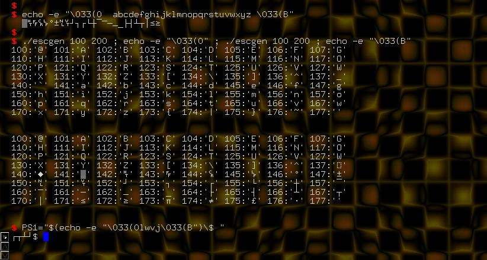

Xterm and rxvt can be switched into line-draw mode on the fly with the appropriate escape sequence. You'll need to switch back after you've output the characters you wanted or any text following it will be garbled. Prompts based on these output codes don't work on the console, instead producing the text equivalents.
To start a sequence of line draw characters, use an echo -e and the \033(0 escape sequence. Most of the characters worth using are in the range lower case "a" through "z". Terminate the string with another escape sequence, \033(B .
The best method I've found for testing this is shown in the image below: use the escgen script mentioned earlier in the HOWTO to show the 100 to 200 octal range, echo the first escape sequence, run the escgen script for the same range, and echo the closing escape sequence. The image also shows how to use this in a prompt.

Using escape sequences in RXVT (also works in Xterm and RXVT derivatives like aterm, which is used here) to produce line draw characters. The "escgen" script used above is given earlier in the HOWTO.